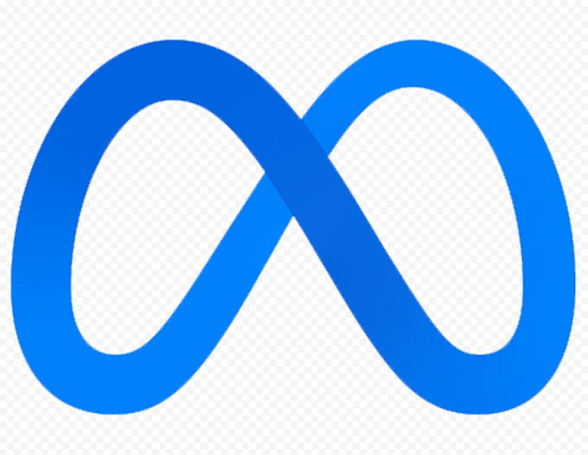

My Projects
Discord Hypebadge Automator

This is a tool that allows users to easily manage and customize the emblems that appear next to their name in Discord. With this program, users can choose from a variety of different Hypebadges and even rotate amongst them to impress their fellow friends or E-Girls.
Automated Gambling Bot

This gambling bot is a software program designed to automatically place bets based on calculations of the most profitable times to bet. It uses algorithms to analyze data and predict the best opportunities for making a profit. The bot is supported on Linux, which means it can run on a variety of devices and operating systems. With its automated betting capabilities, the bot can save users time and increase their chances of winning by making calculated bets based on the analysis of data.
Minecraft
Account Bot

This Minecraft program was designed to gather data about Minecraft accounts. Using the API, the program is able to access information such as the year an account was created, name history, and other account details. By accessing this data, the program can provide insights into a player's history and activity within Minecraft. This information can be useful for various purposes, such as analyzing trends in player behavior, creating targeted advertising campaigns, or developing new game features.
Oculus (Meta) Bot
This program uses Selenium, a browser automation tool, to purchase a Meta Quest 2 as soon as it becomes available on the website. The program is designed to monitor the website for updates and changes, and as soon as the product becomes available, it automatically navigates to the appropriate page and fills out the necessary information to complete the purchase. This method allows for a higher chance of successfully purchasing the product, as it removes the need for manual monitoring and increases the speed of the purchase process.